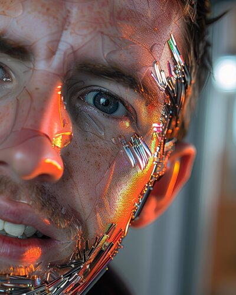

Kyle E. Mathewson, PhD

Associate Professor, Faculty of Science - Psychology
Director, Attention Perception and Performance Lab (APPLab)
University of Alberta
Edmonton, AB
Email: kmathews@ualberta.ca
Phone: (780) 492-2662
Office: P-455 Bio Science - Psychology Wing
University Directory: Faculty Profile
Lab Website: APPLab
GitHub: https://github.com/kylemath
Photography: Photo Album
Twitter: @mathkyle
Instagram: @kylemath
LinkedIn: Kyle Mathewson
Google Scholar
Navigation
Recent Projects
- homePage - Main homepage for kylemathewson.com and helper scripts
- voice2print - From my voice to plastic
- FreethrowEEG - Recording EEG during freethrow basketball shooting
- learningPredictionEEG - GitHub repository
- digitalClock - 3d printed digital clock for esphome and homeassistant
- 3dprint - set of .stl files and other 3d files I find useful, no credit claimed
- nehiyoMTB - Nehiyawewin trail signs for Edmonton
- IllumiStack - 3d Printing with Stacked colour layers web app
- reConstruction - GitHub repository
- Mario-Kart-3.js - GitHub repository
- EEGEdu - Interactive Brain Playground - Browser based tutorials on EEG with webbluetooth and muse
- hueforge-at-home - Basic javascript implementation of color mixing for 3d printing using p5js
- matlab_Psychtoolbox_course - GitHub repository
- RetinotopyMatlabCode - GitHub repository
- strokeEEG - GitHub repository
- voyageAnalysis - GitHub repository
- StoryTrees3 - Story Trees 3 - RAVEN
- pytutorial - GitHub repository
- psych403_Fall2022 - GitHub repository
- Computer-Programming-for-Psychology - GitHub repository
- p5.eegedu - A live coding environment in p5 which includes bluetooth transmitted brain activity as input variables
- p5.eegedu.art - GitHub repository
- StoryTrees2 - GitHub repository
- muse-js - Muse 2016 EEG Headset JavaScript Library (using Web Bluetooth)
- abcovid - GitHub repository
- webcamHR - P5.js webcam HR
- matlab_video_hr - GitHub repository
- Mathewson2009 - Phase analysis from Mathewson 2009
- HNN-AEF - Data and code to replicate the main findings associated with the manuscript “Neural Mechanisms Underlying Human Auditory Evoked Responses Revealed by Human Neocortical Neurosolver”.
- faceoff - Latent GAN State Brain Surfing
- gmailPower - Power User for Gmail
- WhisperingPines - Webcam Responsive AudioVisual Art
- eeg-notebooks - A collection of classic EEG experiments implemented with Python and Jupyter notebooks
- mne-python - MNE : Magnetoencephalography (MEG) and Electroencephalography (EEG) in Python
- MOpt3d - A matlab optical imaging analysis and 3d reconstruction toolbox
- Apparition - Apparition make a live video puppet with pix2pix based on old youtube videos
- DeepEEG - Deep Learning with Tensor Flow for EEG MNE Epoch Objects
- pyoptical - Imagent optical imaging interface to MNE loading
- pycovid - Python package to easily access the most updated Coronavirus data using Python/PIP
- eeg-notebooks_v0.1 - A collection of classic EEG experiments implemented with Python and Jupyter notebooks
- 375Data_2020 - Shared Datasets and analysis files for 375 Final Paper
- react-game-kit - Component library for making games with React & React Native
- SSAEP - miceeg
- muse-lsl - Python script to stream EEG data from the muse 2016 headset
- vispy - Main repository for Vispy
- MathewsonMatlabTools - Toolbox of tricks, gadgets, gizmos, and automated emailers
- cross_colour - Overlay saturated crosshatch grid onto grayscale image for illusory colours
- pyERP - python ERP framework using MNE structures
- garmin_graphs - Load in data from garmin connect and plot over time in matlab
- TimeFreqWorkshop - Presentation and code for time frequency workshop
- ml4a-guides - practical guides, tutorials, and code samples for ml4a
- necker_move - moving necker cube
- micb - Motion Induced Change Blindness - Yao, Wood, Simons 2019 - Psychtoolbox code
- nomad - Near-infrared Optical Montage Automated Design
- visual-illusions - Can we teach a machine to classify visual illusions and generate new ones?
- EEG-Classification - This project was a joint effort with the neurology labs at UNL and UCD Anschutz to use deep learning to classify EEG data.
- face2face-demo - pix2pix demo that learns from facial landmarks and translates this into a face
- pytorch-CycleGAN-and-pix2pix - Image-to-image translation in PyTorch (e.g., horse2zebra, edges2cats, and more)
- ml4a.github.io - machine learning for artists
- Muse_LSL_Environments - A set of python environments for running MUSE LSL experiments, record data, visualize, and send markers, using Alex B. muse-lsl
- MoralWordEEG - Experiment, Materials, and Analysis code for Moral Word EEG project
- AudienceEEG - GitHub repository
- Muse-LSL-Matlab-Tools - chadcwilliams.weebly.com/muse
- FitnessMemory - GitHub repository
- fooof - Parameterizing neural power spectra
- DuckBunny2 - Analysis and results for duckbunny2 project
- muse_osc - Matlab script for reading OSC stream from muse-io
- Pyggy - Artificial Improvisation
Research
Human psychophysiology of attention, perception, and performance. We use human behavioural studies, neuroimaging, and electrophysiological recording to gain understanding of the visual attention system. We study basic processes of the visual attention system involving oscillations in neural activity, as well as how these processes are utilized in real world tasks such as driving and video games. We are also developing and researching new technologies to non-invasively monitor physiology and brain activity.
Ecologically Valid Cognitive Neuroscience
In the Attention Perception and Performance Lab we use and develop cutting edge cognitive neuroscience techniques to study the human brain in its natural habitat. We use EEG, ERPs, Psychophysics, Optical imaging, Electrical Stimulation, fMRI, and Neurofeedback to study human performance and perception in both laboratory tasks and also in real world activities like bike riding.
Key Research Areas:
- EEG Bike: We use bike riding as a model real world activity due to its low motion of the head and neck. We have a protocol to collect ERP's in auditory oddball tasks during bike riding.
- Pulsed Inhibition: We theorize that alpha oscillation represent a pulsating inhibitory mechanism of attention in the brain. We have found that awareness depends on the phase of ongoing alpha oscillations.
- Neuroengineering: Along with colleagues in materials science we design and test adhesive and flexible next generation EEG devices to increase portability.
- Optical Brain Imaging: We use and develop systems to deliver near-infrared light into the human brain, and measure the resulting light to estimate neural activity using optical brain imaging.
Teaching
- PSYCH 275 - Brain and Behavior: An introduction to brain mechanisms involved in sensation, perception, movement, motivation, learning, and cognition, as studied in both humans and lower animals.
- PSYCH 403 - Recent Advances in Experimental Psychology: Discussion of advanced concepts and theories developed by selected fields within experimental psychology.
- PSYCH 505 - Conference Course in Psychology: Review and discussion of advanced theoretical or methodological topics or emerging research areas in Psychology.
- Research Areas: Cognitive Neuroscience, Brain and Behaviour, Consciousness
About
I am an Associate Professor of Psychology in the Faculty of Science's Department of Psychology at the University of Alberta. I was previously a Postdoctoral Fellow at the Beckman Institute at the University of Illinois at Urbana-Champaign and in the Department of Psychology at the University of Alberta. I received my PhD in 2011 from the Brain and Cognition Division of the Department of Psychology at the University of Illinois in the Cognitive Neuroimaging Lab of Drs. Monica Fabiani and Gabriele Gratton, with the support of a Post Graduate Scholarship from the Natural Science and Engineering Research Council of Canada. I received my B.A. in Psychology (Honours; First in Graduating Class) from the University of Victoria in 2007, completing my honours thesis in the Learning and Cognitive Control Lab under the supervision of Dr. Clay Holroyd.
My field of research is the cognitive neuroscience of visual awareness, attention, learning and memory. I am currently directing the Attention Perception and Performance Lab (APPLab) in the Department of Psychology at the University of Alberta. We use human behavioural studies, neuroimaging, and electrophysiological recording to gain understanding of the visual attention system. We study basic processes of the visual attention system involving oscillations in neural activity, as well as how these processes are utilized in real world tasks such as driving and video games. We are also developing and researching new technologies to non-invasively monitor physiology and brain activity.
Last updated: January 2025 | Office: P-455 Bio Science - Psychology Wing | Contact